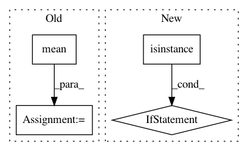

343392813338ae7b10b0a3bbb3b5a9a7da6e588d,lib/model/losses_plaid.py,LossWrapper,__call__,#LossWrapper#Any#Any#,608
Before Change
loss = 0.0
for func, weight in zip(self._loss_functions, self._loss_weights):
loss += (K.mean(func(y_true, y_pred)) * weight)
return loss
After Change
logger.debug("Processing loss function: (func: %s, weight: %s, mask_channel: %s)",
func, weight, mask_channel)
n_true, n_pred = self._apply_mask(y_true, y_pred, mask_channel)
if isinstance(func, DSSIMObjective):
// Extract Image Patches in SSIM requires that y_pred be of a known shape, so
// specifically reshape the tensor.
n_pred = K.reshape(n_pred, K.int_shape(y_pred))
this_loss = func(n_true, n_pred)
loss_dims = K.ndim(this_loss)
loss += (K.mean(this_loss, axis=list(range(1, loss_dims))) * weight)
return loss
In pattern: SUPERPATTERN
Frequency: 3
Non-data size: 4
Instances
Project Name: deepfakes/faceswap
Commit Name: 343392813338ae7b10b0a3bbb3b5a9a7da6e588d
Time: 2020-08-27
Author: 36920800+torzdf@users.noreply.github.com
File Name: lib/model/losses_plaid.py
Class Name: LossWrapper
Method Name: __call__
Project Name: bambinos/bambi
Commit Name: 5bb62768d064583aef9efaf5b0838878e11f71e3
Time: 2016-08-14
Author: tyarkoni@gmail.com
File Name: bambi/models.py
Class Name: RandomTerm
Method Name: _setup
Project Name: EpistasisLab/tpot
Commit Name: 050cb192f15e2d990df867360061081164e57868
Time: 2015-12-02
Author: bartleyn@uchicago.edu
File Name: tpot/tpot.py
Class Name: TPOT
Method Name: _evaluate_individual